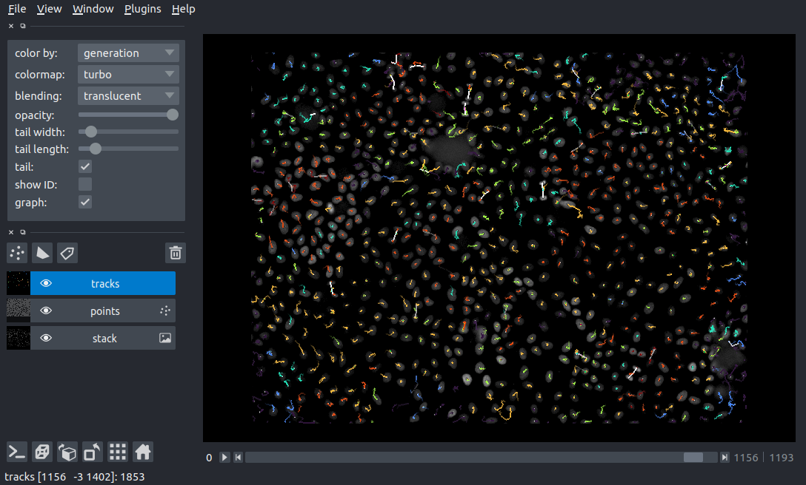

Single cell tracking with napari¶
In this application note, we will use napari (requires version 0.4.0 or greater) to visualize single cell tracking data using the Tracks layer. For an overview of the Tracks layer, please see the tracks layer guide.
This application note covers two examples:
Visualization of a cell tracking challenge dataset
Single cell tracking using btrack and napari
1. Cell tracking challenge data¶
The first example of track visualization uses data from the cell tracking challenge. We will use the C. elegans developing embryo dataset which consists of 3D+t volumetric imaging data, manually annotated tracks and cell lineage information.
A full description of the data format can be found here.
Extracting the tracks from the dataset¶
We need to extract the centroids of each cell and their associated track labels from the annotated dataset. We start by loading the images containing the centroids and unique track labels:
import os
import napari
import numpy as np
import pandas as pd
from skimage.io import imread
from skimage.measure import regionprops_table
PATH = '/path/to/Fluo-N3DH-CE/'
NUM_IMAGES = 195
def load_image(idx: int):
"""Load an image from the sequence.
Parameters
----------
idx : int
Index of the image to load.
Returns
-------
image : np.ndarray
The image specified by the index, idx
"""
filename = os.path.join(PATH, '01_GT/TRA', f'man_track{idx:0>3}.tif')
return imread(filename)
stack = np.asarray([load_image(i) for i in range(NUM_IMAGES)])
For each image in the time-lapse sequence, we will now extract the unique track label (track_id), centroid and timestamp in order to create the track data we will pass to the Tracks layer. For more information on the format of the track data, please see the “tracks data” section of the tracks layer guide.
def regionprops_plus_time(idx):
"""Return the unique track label, centroid and time for each track vertex.
Parameters
----------
idx : int
Index of the image to calculate the centroids and track labels.
Returns
-------
data_df : pd.DataFrame
The dataframe of track data for one time step (specified by idx).
"""
props = regionprops_table(stack[idx, ...], properties=('label', 'centroid'))
props['frame'] = np.full(props['label'].shape, idx)
return pd.DataFrame(props)
data_df_raw = pd.concat(
[regionprops_plus_time(idx) for idx in range(NUM_IMAGES)]
).reset_index(drop=True)
# sort the data lexicographically by track_id and time
data_df = data_df_raw.sort_values(['label', 'frame'], ignore_index=True)
# create the final data array: track_id, T, Z, Y, X
data = data_df.loc[
:, ['label', 'frame', 'centroid-0', 'centroid-1', 'centroid-2']
].to_numpy()
This represents the minimum amount of information to display tracks in napari, and can already be visualised. At this point, there is no concept of track links, lineages, or tracks splitting or merging. These single tracks are sometimes known as tracklets:
napari.view_tracks(data, name='tracklets')
napari.run()
Calculating the graph using the lineage information¶
The Tracks layer can also be used to visualize a track ‘graph’ using the additional keyword argument graph. The graph represents associations between tracks, by defining the
mapping between a track_id and the parents of the track. This graph can be useful in single cell tracking to understand the lineage of cells over multiple cell division events. For more information on the format of the track graph, please see the “tracks graph” section of the tracks layer guide.
In the cell tracking challenge dataset, cell lineage information is stored in a text file man_track.txt in the following format:
A text file representing an acyclic graph for the whole video. Every line corresponds to a single track that is encoded by four numbers separated by a space: L - a unique label of the track (label of markers, 16-bit positive value) B - a zero-based temporal index of the frame in which the track begins E - a zero-based temporal index of the frame in which the track ends P - label of the parent track (0 is used when no parent is defined)
To extract the graph, we load the text file and convert it to a Nx4 integer numpy array, where the rows represent individual tracks and the columns represent L, B, E and P:
lbep = np.loadtxt(os.path.join(PATH, '01_GT/TRA', 'man_track.txt'), dtype=np.uint)
We can then create a dictionary representing the graph, where the key is the unique track label (L) and the value is the label of the parent track (P).
full_graph = dict(lbep[:, [0, 3]])
Finally, we remove the root nodes (i.e. cells without a parent) for visualization with the Tracks layer:
graph = {k: v for k, v in full_graph.items() if v != 0}
Traversing the lineage trees to identify the root nodes¶
One property that is useful to visualize in single cell tracking is the track_id of the root node of the lineage trees, i.e. the founder cell.
We create it with the following code:
def root(node: int):
"""Recursive function to determine the root node of each subgraph.
Parameters
----------
node : int
the track_id of the starting graph node.
Returns
-------
root_id : int
The track_id of the root of the track specified by node.
"""
if full_graph[node] == 0: # we found the root
return node
return root(full_graph[node])
roots = {k: root(k) for k in full_graph.keys()}
The Tracks layer enables the vertices of the tracks to be colored by user specified properties. Here, we will create a property which represents the root_id of each tree, so that cells with a common ancestor are colored the same:
properties = {'root_id': [roots[idx] for idx in data[:, 0]]}
Visualizing the tracks with napari¶
Alongside the tracks, we can also visualize the fluorescence imaging data.
timelapse = np.asarray(
[imread(os.path.join(PATH, '01', f't{i:0>3}.tif')) for i in range(NUM_IMAGES)]
)
Finally, we need to adjust the scaling of the data to account for the anisotropic nature of the images. We can use the scale feature of napari layers to set the voxel size where the z dimension is different to the size in the x and y dimensions. From the dataset, the voxel size (XYZ) in microns is 0.09 x 0.09 x 1.0. Therefore we can set the scale for the layers as:
# scale factor for dimensions in TZYX order
SCALE = (1.0, 1.0, 0.09, 0.09)
We can now visualize the full, linked tracks in napari!
viewer = napari.Viewer()
viewer.add_image(timelapse, scale=SCALE, name='Fluo-N3DH-CE')
viewer.add_tracks(data, properties=properties, graph=graph, scale=SCALE, name='tracks')
napari.run()

2. Using btrack to track cells¶
The btrack library can be used for cell tracking. It provides a convenient to_napari() function to enable rapid visualization of the tracking results. You can learn more about the btrack library here.
import btrack
We start by loading a file containing the centroids of all the found cells in each frame of the source movie. Note that this file only contains the locations of cells in the movie, there are no tracks yet. We can use the btrack library to load this file as a list of objects that contain information about each found cell, including the TZYX position. The example dataset can be downloaded here.
objects = btrack.dataio.import_CSV('napari_example.csv')
Next, we set up a btrack.BayesianTracker instance using a context manager to ensure the library is properly initialized. The objects are added to the tracker using the .append() method. We also set the imaging volume using the volume property. As this is a 2D dataset, the limits of the volume are set to the XY dimensions of the image dataset, while the Z dimension is set to be very large (±1e5). In this case, setting the Z limits of the volume to be very large penalises tracks which initialize or terminate in the centre of the XY plane, unless they can be explained by corresponding cell division or death events.
The tracker performs the process of linking individual cell observations into tracks and the generating the associated track graph:
with btrack.BayesianTracker() as tracker:
# configure the tracker using a config file
tracker.configure_from_file('cell_config.json')
tracker.append(objects)
tracker.volume=((0,1600), (0,1200), (-1e5,1e5))
# track and optimize
tracker.track_interactive(step_size=100)
tracker.optimize()
# get the tracks in a format for napari visualization
data, properties, graph = tracker.to_napari(ndim=2)
We set the configuration of the tracker using a configuration file using the .configure_from_file() method. An example configuration file can be found here.
Next, the objects are linked into tracks using the .track_interactive() method. The step_size argument specifies how many steps are taken before reporting the tracking statistics. The .optimize() method then performs a global optimization on the dataset and creates lineage trees automatically.
Finally, the .to_napari() method returns the track vertices, track properties and graph in a format that can be directly visualized using the napari Tracks layer:
viewer = napari.Viewer()
viewer.add_tracks(data, properties=properties, graph=graph)
napari.run()

A notebook for this example can be found in the btrack examples directory (napari_btrack.ipynb)
Summary¶
In this application note, we have used napari to track and visualize single cells.
Further reading¶
References for cell tracking challenge:
https://www.nature.com/articles/nmeth.1228
http://dx.doi.org/10.1093/bioinformatics/btu080
http://dx.doi.org/10.1038/nmeth.4473
For a more advanced example of visualizing cell tracking data with napari, please see the Arboretum plugin for napari: